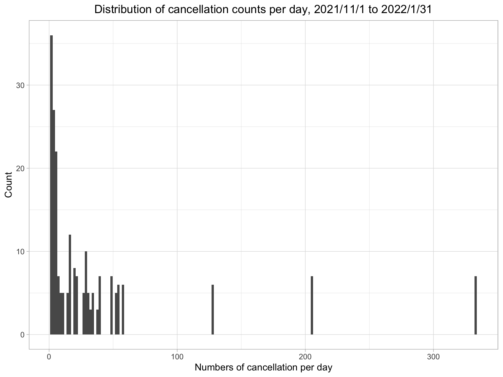
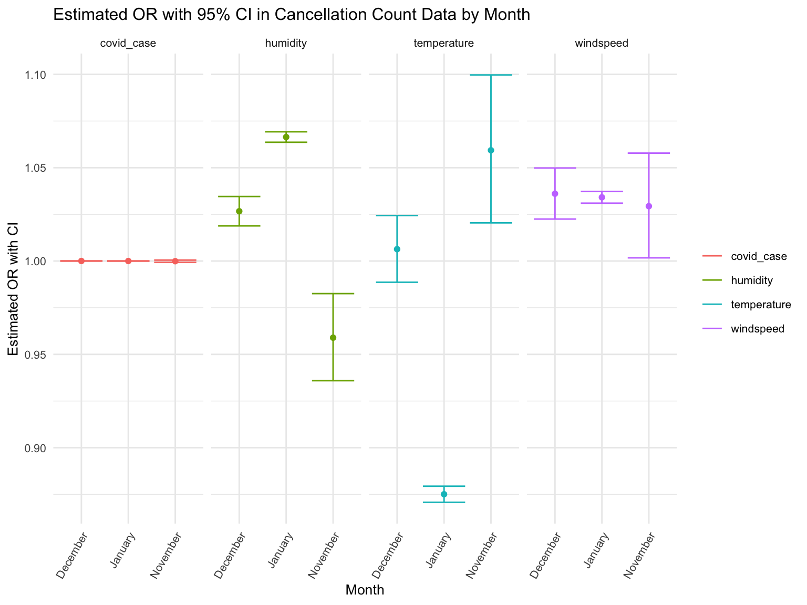
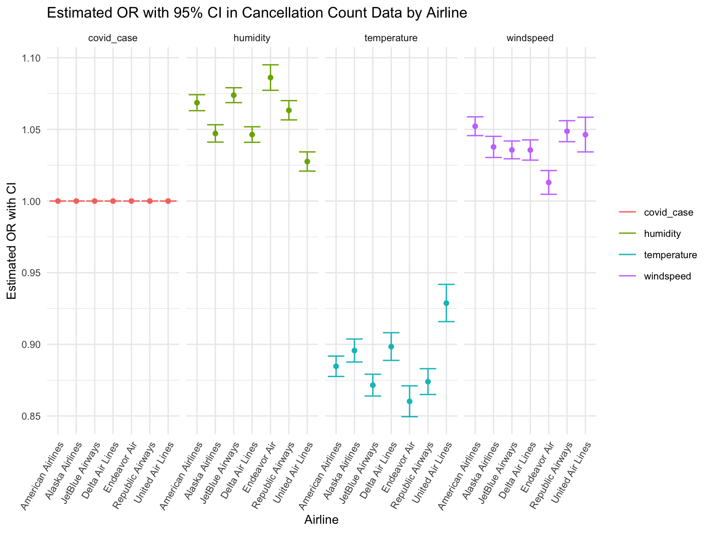

library(dplyr)##
## Attaching package: 'dplyr'## The following objects are masked from 'package:stats':
##
## filter, lag## The following objects are masked from 'package:base':
##
## intersect, setdiff, setequal, unionlibrary(tidyverse)## ── Attaching packages
## ───────────────────────────────────────
## tidyverse 1.3.2 ──## ✔ ggplot2 3.3.6 ✔ purrr 0.3.4
## ✔ tibble 3.1.8 ✔ stringr 1.4.1
## ✔ tidyr 1.2.0 ✔ forcats 0.5.2
## ✔ readr 2.1.2
## ── Conflicts ────────────────────────────────────────── tidyverse_conflicts() ──
## ✖ dplyr::filter() masks stats::filter()
## ✖ dplyr::lag() masks stats::lag()library(ggridges)
library(patchwork)
library(plotly)##
## Attaching package: 'plotly'
##
## The following object is masked from 'package:ggplot2':
##
## last_plot
##
## The following object is masked from 'package:stats':
##
## filter
##
## The following object is masked from 'package:graphics':
##
## layoutknitr::opts_chunk$set(
echo = TRUE,
warning = FALSE,
fig.width = 8,
fig.height = 6,
out.width = "90%"
)
theme_set(theme_minimal() + theme(legend.position = "bottom"))
cancel_raw = read_csv("tidied_data/cancel.csv")## Rows: 1441 Columns: 10
## ── Column specification ────────────────────────────────────────────────────────
## Delimiter: ","
## chr (4): airline_name, flight_number, destination_airport, scheduled_hour
## dbl (4): month, day, year, scheduled_elapsed_time_minutes
## date (1): date
## time (1): scheduled_departure_time
##
## ℹ Use `spec()` to retrieve the full column specification for this data.
## ℹ Specify the column types or set `show_col_types = FALSE` to quiet this message.covid = read_csv("tidied_data/covid.csv")## Rows: 92 Columns: 5
## ── Column specification ────────────────────────────────────────────────────────
## Delimiter: ","
## dbl (4): year, month, day, case_count
## date (1): date
##
## ℹ Use `spec()` to retrieve the full column specification for this data.
## ℹ Specify the column types or set `show_col_types = FALSE` to quiet this message.daily_weather = read_csv("tidied_data/daily_weather.csv")## Rows: 92 Columns: 24
## ── Column specification ────────────────────────────────────────────────────────
## Delimiter: ","
## chr (5): daily_peak_wind_direction, daily_precipitation, daily_snowfall, d...
## dbl (18): year, month, day, daily_average_dew_point_temperature, daily_aver...
## date (1): date
##
## ℹ Use `spec()` to retrieve the full column specification for this data.
## ℹ Specify the column types or set `show_col_types = FALSE` to quiet this message.Count numbers of cancellation per day
cancel1 <- cancel_raw %>%
mutate(number = 1) %>%
mutate(number = as.numeric(number)) %>%
group_by(date, airline_name) %>%
mutate(daily_cancel_by_airline = sum(number)) %>%
select(-flight_number,-destination_airport,-scheduled_hour,-scheduled_departure_time,-scheduled_elapsed_time_minutes, -number)
cancel2 <- cancel_raw %>%
mutate(number = 1) %>%
mutate(number = as.numeric(number)) %>%
group_by(date) %>%
mutate(daily_cancel = sum(number)) %>%
select(-flight_number,-destination_airport,-scheduled_hour,-scheduled_departure_time,-scheduled_elapsed_time_minutes, -number)
cancel <- cancel1 %>% left_join(cancel2, by = c("airline_name", "date", "month", "day", "year")) %>%
distinct weather dataset: select
daily_average_dry_bulb_temperature,
daily_average_relative_humidity,
daily_peak_wind_speed predictors
weather <- daily_weather %>%
mutate(
temperature = daily_average_dry_bulb_temperature,
humidity = daily_average_relative_humidity,
windspeed = daily_peak_wind_speed
) %>%
select(date, year, month, day, temperature, humidity, windspeed) merge dataset
# merge weather and covid dataset
weather_covid <- weather %>% left_join(covid, by = c("month", "day", "year")) %>%
mutate(covid_case = case_count) %>%
select(-case_count)# merge cancel and weather_covid dataset
cancel_tidy <- weather_covid %>%
left_join(cancel, by = c("month", "day", "year"))
cancel_tidy <- cancel_tidy%>%
mutate(
temperature = as.numeric(temperature),
humidity = as.numeric(humidity),
windspeed = as.numeric(windspeed),
covid_case = as.numeric(covid_case),
airline_name = as_factor(airline_name),
month = ifelse(month == 11, "November",
ifelse(month == 12, "December", "January")),
month1 = ifelse(month == "November", "Nov",
ifelse(month == "December", "Dec", "Jan")),
year_month = paste(year, month1, sep="-")) %>%
filter(!is.na(daily_cancel)) %>%
filter(!is.na(daily_cancel_by_airline)) %>%
select(-month1, -date.y, -date.x)
write_csv(cancel_tidy, "tidied_data/cancel_tidy.csv")Since our outcome, cancel_count, is calculated using a
count variable (number of cancellation) repeated over time, we’ll model
it using a Poisson regression model.
# poisson distribution of counts
cancel_tidy %>%
ggplot(aes(x = daily_cancel)) +
geom_histogram(binwidth = 1.8) +
theme_light() +
labs(x = "Numbers of cancellation per day",
y = "Count",
title = "Distribution of cancellation counts per day, 2021/11/1 to 2022/1/31") +
theme(plot.title = element_text(hjust = 0.5))
Cancellation count per month show difference both by month and airline, therefore, using month and airline as stratification factors
cancel_airline <- cancel_tidy %>%
group_by(year_month, airline_name) %>%
mutate(Total_number_of_cancellation = sum(daily_cancel))
cancel_airline %>%
select(year_month, airline_name, Total_number_of_cancellation) %>%
distinct %>%
pivot_wider(
names_from = airline_name,
values_from = Total_number_of_cancellation) %>%
head() %>%
knitr::kable(digits = 2, caption = "Total number of cancellation in each airline") | year_month | American Airlines | Alaska Airlines | JetBlue Airways | Delta Air Lines | Endeavor Air | Republic Airways | United Air Lines |
|---|---|---|---|---|---|---|---|
| 2021-Nov | 42 | 23 | 11 | 8 | 3 | 8 | 1 |
| 2021-Dec | 174 | 143 | 252 | 226 | 10 | 5 | 171 |
| 2022-Jan | 1047 | 977 | 1121 | 1039 | 1058 | 1047 | 672 |
write_csv(cancel_airline, "tidied_data/cancel_airline.csv")plot_cancel_airline <- cancel_airline %>%
ggplot(aes(x = year_month, y = Total_number_of_cancellation, fill = airline_name)) +
geom_bar(stat = "identity", show.legend = FALSE) +
labs(
title = "Total Number of Cancellation by Airline",
x = "Year and Month",
y = "Total Number of Cancellation"
) +
theme(legend.position="right", legend.title = element_blank(),
text = element_text(size = 10),
axis.text.x = element_text(angle = 60, hjust = 1, size = 5)) +
facet_grid(. ~ airline_name)
ggplotly(plot_cancel_airline)poisson = glm(daily_cancel ~ temperature + humidity + windspeed + covid_case,family = "poisson",data=cancel_tidy)
summary(poisson) ##
## Call:
## glm(formula = daily_cancel ~ temperature + humidity + windspeed +
## covid_case, family = "poisson", data = cancel_tidy)
##
## Deviance Residuals:
## Min 1Q Median 3Q Max
## -10.834 -3.818 -1.062 1.687 12.682
##
## Coefficients:
## Estimate Std. Error z value Pr(>|z|)
## (Intercept) 2.257e+00 8.342e-02 27.06 <2e-16 ***
## temperature -1.240e-01 1.852e-03 -66.97 <2e-16 ***
## humidity 5.970e-02 1.080e-03 55.29 <2e-16 ***
## windspeed 3.868e-02 1.313e-03 29.46 <2e-16 ***
## covid_case 1.017e-05 8.434e-07 12.06 <2e-16 ***
## ---
## Signif. codes: 0 '***' 0.001 '**' 0.01 '*' 0.05 '.' 0.1 ' ' 1
##
## (Dispersion parameter for poisson family taken to be 1)
##
## Null deviance: 15063.0 on 215 degrees of freedom
## Residual deviance: 5171.4 on 211 degrees of freedom
## AIC: 6137.1
##
## Number of Fisher Scoring iterations: 6cancel_tidy %>%
nest(df = -month) %>%
mutate(
models = map(.x = df, ~ glm(daily_cancel ~ temperature + humidity + windspeed + covid_case,family = "poisson", data = .x)),
results = map(models, broom::tidy)
) %>%
unnest(results) %>%
select(month, term, estimate) %>%
mutate(term = fct_inorder(term)) %>%
pivot_wider(
names_from = term,
values_from = estimate) %>%
knitr::kable(digits = 6, caption = "Poisson model nested by month")| month | (Intercept) | temperature | humidity | windspeed | covid_case |
|---|---|---|---|---|---|
| November | 0.073197 | 0.057638 | -0.041925 | 0.028955 | -8.6e-05 |
| December | -0.902460 | 0.006328 | 0.026320 | 0.035433 | 2.3e-05 |
| January | 2.407319 | -0.133471 | 0.064321 | 0.033555 | 9.0e-06 |
poisson_by_month = cancel_tidy %>%
nest(data = -month) %>%
mutate(
models = map(.x = data, ~glm(daily_cancel ~ temperature + humidity + windspeed + covid_case, family = "poisson", data = .x)),
results = map(models, broom::tidy)
) %>%
select(month, results) %>%
unnest(results) %>%
mutate(
OR = exp(estimate),
CI_lower = exp(estimate - 1.96 * std.error),
CI_upper = exp(estimate + 1.96 * std.error),
p.value = format(p.value, scientific = TRUE, digits = 3)
) %>%
select(month, term, OR, CI_lower,CI_upper, p.value)
poisson_by_month %>%
filter(term != "(Intercept)" ) %>%
knitr::kable(digits = 3, align = "llccc", col.names = c("Month", "Terms", "Estimated adjusted OR", "CI lower bound", "CI upper bound", "P-value"))| Month | Terms | Estimated adjusted OR | CI lower bound | CI upper bound | P-value |
|---|---|---|---|---|---|
| November | temperature | 1.059 | 1.020 | 1.100 | 2.52e-03 |
| November | humidity | 0.959 | 0.936 | 0.983 | 7.29e-04 |
| November | windspeed | 1.029 | 1.002 | 1.058 | 3.73e-02 |
| November | covid_case | 1.000 | 0.999 | 1.001 | 7.77e-01 |
| December | temperature | 1.006 | 0.989 | 1.024 | 4.85e-01 |
| December | humidity | 1.027 | 1.019 | 1.035 | 1.74e-11 |
| December | windspeed | 1.036 | 1.022 | 1.050 | 1.42e-07 |
| December | covid_case | 1.000 | 1.000 | 1.000 | 1.96e-29 |
| January | temperature | 0.875 | 0.871 | 0.879 | 0.00e+00 |
| January | humidity | 1.066 | 1.064 | 1.069 | 0.00e+00 |
| January | windspeed | 1.034 | 1.031 | 1.037 | 5.42e-105 |
| January | covid_case | 1.000 | 1.000 | 1.000 | 2.55e-18 |
Create a plot showing the estimated ORs and CIs for each month
poisson_by_month %>%
filter(term != "(Intercept)") %>%
ggplot(aes(x = month, y = OR, color = term)) +
geom_point(show.legend = FALSE, aes()) +
geom_errorbar(aes(ymin = CI_lower,
ymax = CI_upper)) +
labs(
title = "Estimated OR with 95% CI in Cancellation Count Data by Month",
x = "Month",
y = "Estimated OR with CI"
) +
theme(legend.position="right", legend.title = element_blank(),
text = element_text(size = 10),
axis.text.x = element_text(angle = 60, hjust = 1, size = 8)) +
facet_grid(. ~ term)
cancel_tidy %>%
nest(df = -airline_name) %>%
mutate(
models = map(.x = df, ~ glm(daily_cancel ~ temperature + humidity + windspeed + covid_case,family = "poisson", data = .x)),
results = map(models, broom::tidy)
) %>%
unnest(results) %>%
select(airline_name, term, estimate) %>%
mutate(term = fct_inorder(term)) %>%
pivot_wider(
names_from = term,
values_from = estimate) %>%
knitr::kable(digits = 6, caption = "Poisson model nested by airline")| airline_name | (Intercept) | temperature | humidity | windspeed | covid_case |
|---|---|---|---|---|---|
| American Airlines | 1.133333 | -0.122565 | 0.066371 | 0.050882 | 1.6e-05 |
| Alaska Airlines | 2.994559 | -0.110218 | 0.046087 | 0.037056 | 6.0e-06 |
| JetBlue Airways | 1.792242 | -0.137557 | 0.071265 | 0.035053 | 1.3e-05 |
| Delta Air Lines | 3.067495 | -0.107131 | 0.045346 | 0.034974 | 2.0e-06 |
| Endeavor Air | 2.417544 | -0.150592 | 0.082641 | 0.012874 | 1.8e-05 |
| Republic Airways | 2.042389 | -0.134742 | 0.061405 | 0.047570 | 1.5e-05 |
| United Air Lines | 3.366347 | -0.073912 | 0.027191 | 0.045288 | -4.0e-06 |
poisson_by_airline = cancel_tidy %>%
nest(data = -airline_name) %>%
mutate(
models = map(.x = data, ~glm(daily_cancel ~ temperature + humidity + windspeed + covid_case, family = "poisson", data = .x)),
results = map(models, broom::tidy)
) %>%
select(airline_name, results) %>%
unnest(results) %>%
mutate(
OR = exp(estimate),
CI_lower = exp(estimate - 1.96 * std.error),
CI_upper = exp(estimate + 1.96 * std.error),
p.value = format(p.value, scientific = TRUE, digits = 3)
) %>%
select(airline_name, term, OR, CI_lower,CI_upper, p.value)
poisson_by_airline %>%
filter(term != "(Intercept)" ) %>%
knitr::kable(digits = 3, align = "llccc", col.names = c("Airline Name", "Terms", "Estimated adjusted OR", "CI lower bound", "CI upper bound", "P-value"))| Airline Name | Terms | Estimated adjusted OR | CI lower bound | CI upper bound | P-value |
|---|---|---|---|---|---|
| American Airlines | temperature | 0.885 | 0.878 | 0.892 | 5.48e-196 |
| American Airlines | humidity | 1.069 | 1.063 | 1.074 | 9.54e-138 |
| American Airlines | windspeed | 1.052 | 1.046 | 1.059 | 9.69e-58 |
| American Airlines | covid_case | 1.000 | 1.000 | 1.000 | 1.34e-13 |
| Alaska Airlines | temperature | 0.896 | 0.888 | 0.904 | 2.16e-128 |
| Alaska Airlines | humidity | 1.047 | 1.041 | 1.053 | 5.48e-55 |
| Alaska Airlines | windspeed | 1.038 | 1.030 | 1.045 | 1.52e-24 |
| Alaska Airlines | covid_case | 1.000 | 1.000 | 1.000 | 1.07e-02 |
| JetBlue Airways | temperature | 0.871 | 0.864 | 0.879 | 5.77e-209 |
| JetBlue Airways | humidity | 1.074 | 1.069 | 1.079 | 3.13e-183 |
| JetBlue Airways | windspeed | 1.036 | 1.029 | 1.042 | 1.87e-30 |
| JetBlue Airways | covid_case | 1.000 | 1.000 | 1.000 | 5.77e-10 |
| Delta Air Lines | temperature | 0.898 | 0.889 | 0.908 | 1.21e-84 |
| Delta Air Lines | humidity | 1.046 | 1.041 | 1.052 | 9.07e-66 |
| Delta Air Lines | windspeed | 1.036 | 1.029 | 1.043 | 8.55e-24 |
| Delta Air Lines | covid_case | 1.000 | 1.000 | 1.000 | 3.60e-01 |
| Endeavor Air | temperature | 0.860 | 0.850 | 0.871 | 3.84e-123 |
| Endeavor Air | humidity | 1.086 | 1.077 | 1.095 | 5.70e-87 |
| Endeavor Air | windspeed | 1.013 | 1.005 | 1.021 | 2.01e-03 |
| Endeavor Air | covid_case | 1.000 | 1.000 | 1.000 | 3.95e-12 |
| Republic Airways | temperature | 0.874 | 0.865 | 0.883 | 1.07e-144 |
| Republic Airways | humidity | 1.063 | 1.057 | 1.070 | 4.68e-81 |
| Republic Airways | windspeed | 1.049 | 1.041 | 1.056 | 1.16e-40 |
| Republic Airways | covid_case | 1.000 | 1.000 | 1.000 | 4.10e-09 |
| United Air Lines | temperature | 0.929 | 0.916 | 0.942 | 3.76e-25 |
| United Air Lines | humidity | 1.028 | 1.021 | 1.034 | 3.17e-16 |
| United Air Lines | windspeed | 1.046 | 1.034 | 1.059 | 1.73e-14 |
| United Air Lines | covid_case | 1.000 | 1.000 | 1.000 | 5.71e-02 |
Create a plot showing the estimated ORs and CIs for each airline
poisson_by_airline %>%
filter(term != "(Intercept)") %>%
ggplot(aes(x = airline_name, y = OR, color = term)) +
geom_point(show.legend = FALSE, aes()) +
geom_errorbar(aes(ymin = CI_lower,
ymax = CI_upper)) +
labs(
title = "Estimated OR with 95% CI in Cancellation Count Data by Airline",
x = "Airline",
y = "Estimated OR with CI"
) +
theme(legend.position="right", legend.title = element_blank(),
text = element_text(size = 10),
axis.text.x = element_text(angle = 60, hjust = 1, size = 8)) +
facet_grid(. ~ term)